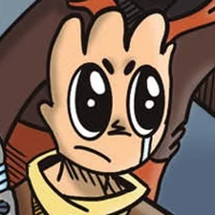
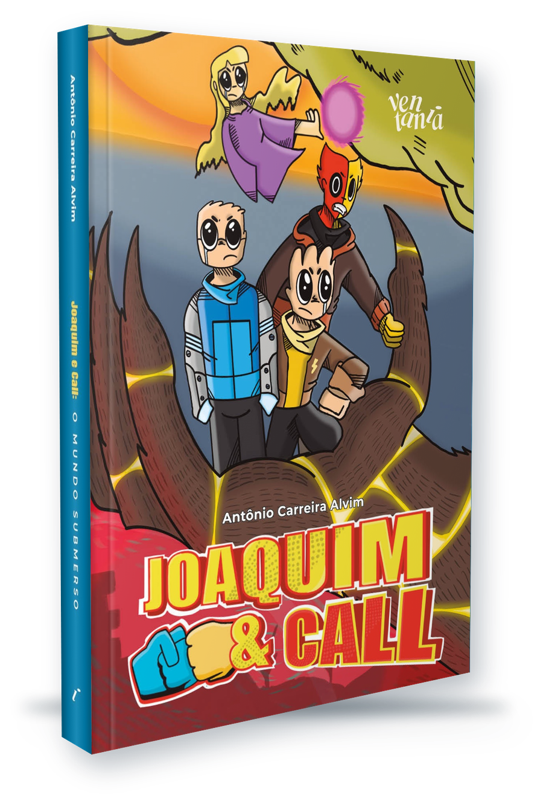
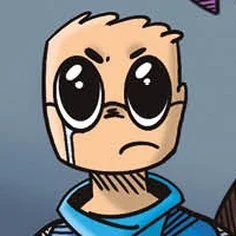
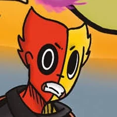
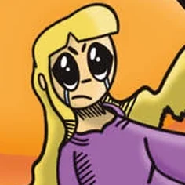
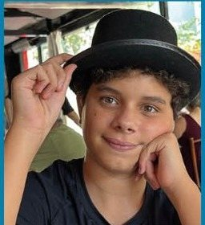

Call
Força: EmpatiaO caçula que esconde o medo atrás das piadas. Quando um amigo está em perigo, seu grito vira um campo de força.
Antônio Carreira Alvim
Uma aventura onde o maior poder é ser mais forte que os próprios traumas.
Dois irmãos chegam à Vila dos Anjos sem saber explicar de onde vieram. Ali descobrem que medo, amor e amizade podem virar força de verdade.
Garanta o seu exemplar
E se existisse um livro de super-heróis que falasse de temas sensíveis, como a maldade emocional, de maneira leve, clara e impactante?
Marcados por traumas e perdas, Joaquim e Call tentam reconstruir suas vidas na pacata Vila dos Anjos, onde conhecem JimmyJosh, um aliado carismático de duas personalidades.
O que começa como um recomeço tranquilo logo se transforma em uma jornada repleta de mistérios, novos laços e batalhas contra forças sombrias.
Ao lado da enigmática Felitrix, os heróis enfrentam ameaças que desafiam não apenas seus poderes, mas também suas emoções mais profundas.
Entre dimensões instáveis e inimigos capazes de manipular a própria realidade, uma pergunta ecoa: será possível derrotar aquilo que nunca morre?
Ali, a diferença é como flor em campo aberto: natural, diversa e bem-vinda.
Os personagens
Na Vila dos Anjos, cada poder desperta de um sentimento. Juntos, eles enfrentam Omatrix, o tirano de Terra Quente, e seu servo Zordrax.

O caçula que esconde o medo atrás das piadas. Quando um amigo está em perigo, seu grito vira um campo de força.

O irmão mais velho, de óculos e mãos sujas de graxa. Para proteger quem ama, circuitos de luz se acendem em seus braços.

Dois irmãos num só corpo: Jimmy, calmo e observador; Josh, pura faísca. Unidos, entram na mente do inimigo.

Feiticeira de Terra Quente e guardiã da Magia dos Portais, capaz de abrir e fechar caminhos entre mundos.
Medo, amor, trauma e pertencimento não são só temas: são as fontes reais de poder neste universo.
A história atravessa dimensões sem perder o foco no que importa: família, amizade e crescimento.
A Vila dos Anjos e a Terra Quente funcionam como extensões do estado emocional dos personagens.
Call permanece de pé, ofegante, o corpo tremendo, mas nos olhos dele há algo novo: a consciência de que a empatia afronta o medo e se transforma em poder.

Sobre o autor
Antônio Carreira Alvim é um jovem escritor, ilustrador e criador de universos fantásticos. Nascido em 2011, descobriu cedo o amor por contar histórias e desenhar personagens que refletem emoções humanas profundas.
Aos 13 anos, escreveu e dirigiu seu primeiro curta de animação, O Monstro da Rejeição, inspirado em suas vivências com o bullying. O curta foi exibido em diversos festivais e conquistou prêmios.
Joaquim e Call nasceu de seus cadernos de desenho e histórias em quadrinhos e já se transformou em roteiro de série e de longa-metragem animado.
Uma história de super-heróis sobre o que a gente sente, para ler, se reconhecer e conversar depois.
Para leitores de 12 a 17 anos e para quem já foi um deles.
Garanta o seu exemplar